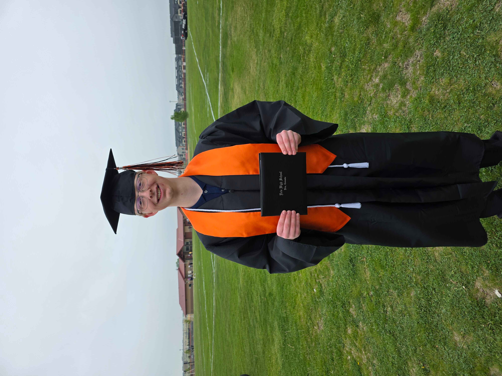
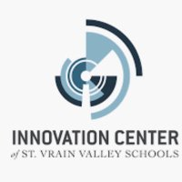
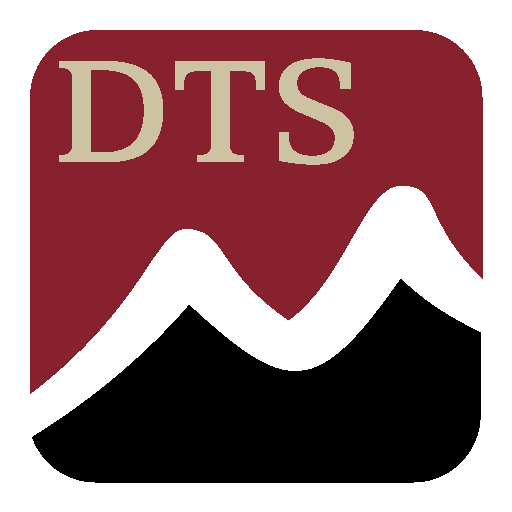

I recently graduated from Erie High School in St. Vrain Valley School District. As I take my next steps in life and begin building my future career, I want to take a moment to reflect on the people, programs, and opportunities that make the St. Vrain Valley School District (SVVSD) stand out, and to share how they’ve helped shape me both as a student and as a person.
One of the most impactful parts of my high school experience was getting involved at the Innovation Center in Longmont. The Innovation Center is where students across the entire district come together to collaborate, explore career pathways, and work on real-world projects in fields such as aerospace, cybersecurity, biosciences, and much more. My time at the Innovation Center has taught me many aspects of learning about computer science and cybersecurity. In classes such as Introduction to Cloud Computing and Linux Essentials, I earned the AWS Cloud Practitioner and the LPI Linux Essentials industry certificates. These classes and certifications have prepared me to jump out ahead of the crowd. It has also been very helpful to learn about my passion for computer science and find my career path I plan to follow at Colorado State University.
The Innovation Center is home to many student project teams in various fields. When I was a Senior in the Spring, I took the opportunity to join the NSF Institute for Student-AI Teaming (iSAT) project team. As part of this project team, I collaborated with peers to develop an interactive web interface for a Large Language Model (LLM). This project enhanced my coding skills, troubleshooting skills, and communication skills. Being part of the iSAT team gave me invaluable hands-on experience that most high school students don’t have. It showed me how real-world collaboration works, and it solidified my passion for computer science and AI.
A key experience that has shaped my growth was participating in the Opportunity CLIMB mentorship program at the Innovation Center. Through this program, industry mentors in the technology field offer professional career advice and guidance to help me plan my next steps. It also provides opportunities to earn valuable industry certifications from leading companies such as Microsoft, AWS, Salesforce, and Cisco. I'm currently working on building my technical skills and plan to complete the Cisco CCST Networking Certification in the near future.
The Innovation Center also hosts an annual career fair where students can explore job opportunities across various fields. Through this event, I was able to secure a summer position with the District Technology Services (DTS) for St. Vrain Valley Schools. At DTS, I install and configure PCs, monitors, and projectors for schools throughout the district. This hands-on experience that the school district has provided has been a fantastic opportunity to develop my technical skills, contribute to my school community even after graduation, and gain valuable insights into IT support and device management within an educational setting.
The teachers and faculty members at SVVSD are truly amazing and genuinely want every student to succeed. They consistently go out of their way to provide support, whether it’s helping with academics or offering valuable career advice. Whether I’m in the district as a student or as an employee, I’ve found everyone to be welcoming, supportive, and committed to creating a positive environment. St. Vrain Valley Schools will make a lasting impact on future students as it did with me. I am truly grateful to have been a part of the SVVSD community. Thank you to the teachers and staff who make this place so outstanding!